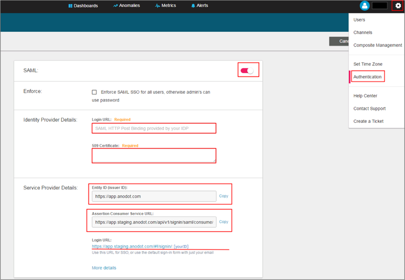
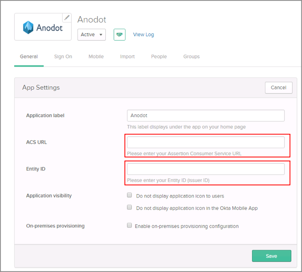

Log in to your Anodot account as an Administrator.
Navigate to Settings > Authentication.
Enter the following (see screen shot at end of step for reference):
Turn the SAML switch on.
Login URL: Copy and paste the following:
Sign into the Okta Admin Dashboard to generate this variable.
509 Certificate: Copy and paste the following (in PEM text format):
Sign into the Okta Admin Dashboard to generate this variable.
Make a copy of the value for Entity ID (Issuer ID).
Make a copy of the value for Assertion Customer Service URL.
Click Save.

In Okta, select the General tab for the Anodot app, then click Edit.
Enter the Entity ID (Issuer ID) you copied earlier into the Entity ID field.
Enter the Assertion Consumer Service URL you copied earlier into the ACS URL field.
Click Save.

Done!
Notes:
SP-initiated flows and IDP-initiated flows are supported.
Just In Time (JIT) provisioning is not supported.
CASE 1:
Open this URL https://app.staging.anodot.com/#!/signin/[yourID].
CASE 2:
Open this URL: https://app.anodot.com/.
Enter your Email (password is ignored and can be left blank).
Click Sign in.